blob.coleoni.com 2 pages
Fix first grouped by rule, most serious on top
- Elements must meet minimum color contrast ratio thresholdsBlocks people
Ensure the contrast between foreground and background colors meets WCAG 2 AA minimum contrast ratio thresholds
1.4.3 Contrast (Minimum) AAeMAG 4.18 elements on /, /pt/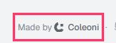
.gap-\[0\.25em\] 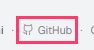
footer > a[target="_blank"][rel="noopener noreferrer"] 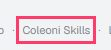
a[href$="skills.coleoni.com"] How to fixElement has insufficient color contrast of 3.03 (foreground color: #898c92, background color: #f2f3f5, font size: 8.3pt (11px), font weight: normal). Expected contrast ratio of 4.5:1 Details - All page content should be contained by landmarksTo fix
Ensure all page content is contained by landmarks
eMAG 1.8best practice2 elements on /, /pt/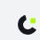
h1 
h1 How to fixSome page content is not contained by landmarks Details - No skip linkWorth a look
The first Tab stop is not a link to the main content, so keyboard users go through the whole menu on every page.
2.4.1 Bypass Blocks AeMAG 1.52 elements on /, /pt/a https://coleoni.com “Coleoni” · a https://coleoni.com/pt “Coleoni”How to fixAdd “Skip to content” as the first focusable element, pointing to <main id="content">. eMAG 1.5 asks for it.
Found by hand states the script doesn’t open: Animate mode, the dark theme, Randomize
- The faint grey fails in Animate mode and in the dark themeBlocks people
The script reads each page as it opens, in the light theme. In Animate mode, the timeline, the durations and the hints use #898c92 on #fdfdfe (3.31:1); in the dark theme, the footer is #696c71 on #0a0b0d (3.73:1). Both are under 4.5:1, at 11 to 13px. People with low vision, or on a phone in the sun, lose that text.
1.4.3 Contrast (Minimum) AAeMAG 4.190 elements on /, /pt/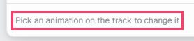
Animate · hint under the track 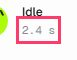
Animate · duration 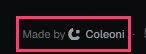
dark theme · footer How to fixOne token fixes every use: --pulse-foreground-subtle, in src/styles.css. In the light theme, oklch(0.64 0.01 260) gives 3.0 to 3.3:1; oklch(0.53 0.01 260) gives 4.75:1 or more. In the dark theme, oklch(0.53 0.008 260) gives 3.7:1; oklch(0.64 0.008 260) gives 5:1 or more. The two themes just swap values. - The animation buttons leave the duration out of their nameWorth a look
Each button in the Animations list shows “Idle 2.4 s” and is named “Add Idle at the end. Once in the cycle”. axe rates it serious; by hand it is minor, since voice control still finds the button by “Idle”. Even so, the name should start with what is written.
2.5.3 Label in Name AeMAG 6.228 elements on /, /pt/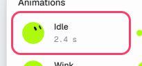
Animate · Animations list How to fixStart the aria-label with the visible text (“Idle, 2.4 s: add at the end, once in the cycle”), or keep the visible text as the name and move the rest to aria-describedby. - Randomize changes the blob in silenceWorth a look
The blob itself is well described (“Your blob: lime circle, neutral”). But Randomize, or the R key, swaps it for another one and the status area stays quiet: a screen reader user has to go back to the image to find out what came.
4.1.3 Status Messages AAeMAG 2.22 elements on /, /pt/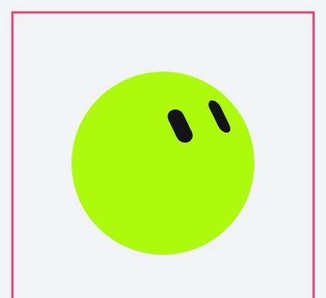
the stage · role=img How to fixSend the new label to the role="status" area that already announces “Link copied”, for example “Your blob: lime pebble, attentive”.
Also checked by hand, and fine: menus and dialogs open with Enter, close with Esc and hand focus back; tabs and option grids move with the arrows; every control in both modes has a name; the blob is an image with a label that follows each change; nothing moves with reduced motion on; both pages declare their language.
Keyboard
| Tab stops | Skip link | No visible focus | Focus on hidden elements | Keyboard trap | |
|---|---|---|---|---|---|
/ | 27 | no | 0 | 0 | no |
/pt/ | 27 | no | 0 | 0 | no |
Still to check by hand
- Read the page with a screen reader (NVDA, VoiceOver, TalkBack): does the order make sense?
- Alt text says what the image means here, not what it looks like.
- Videos have captions; audio has a transcript.
- Form errors say what went wrong and how to fix it, next to the field.
- Zoom to 200%: nothing is cut, nothing overlaps.
- Every action that works with a mouse also works with the keyboard.
Automated checks find part of the problems. The rest needs the manual pass above.
Every page
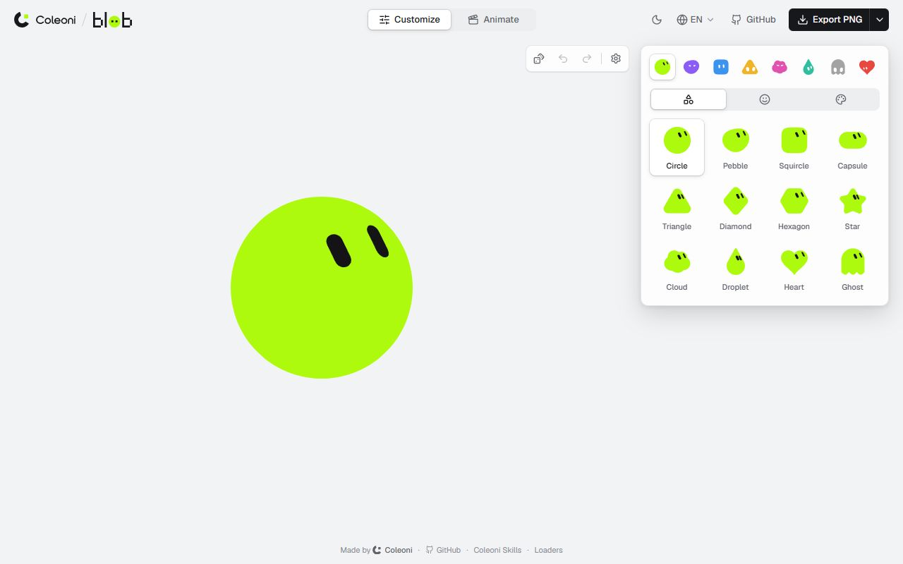
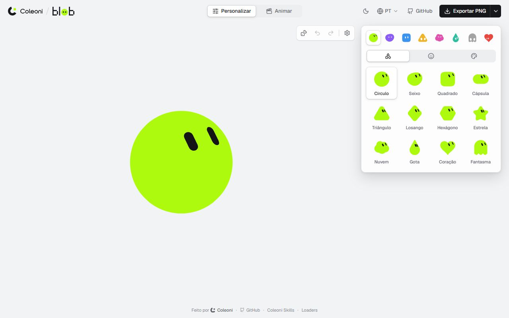
Made by /coleoni-a11y · skills.coleoni.com